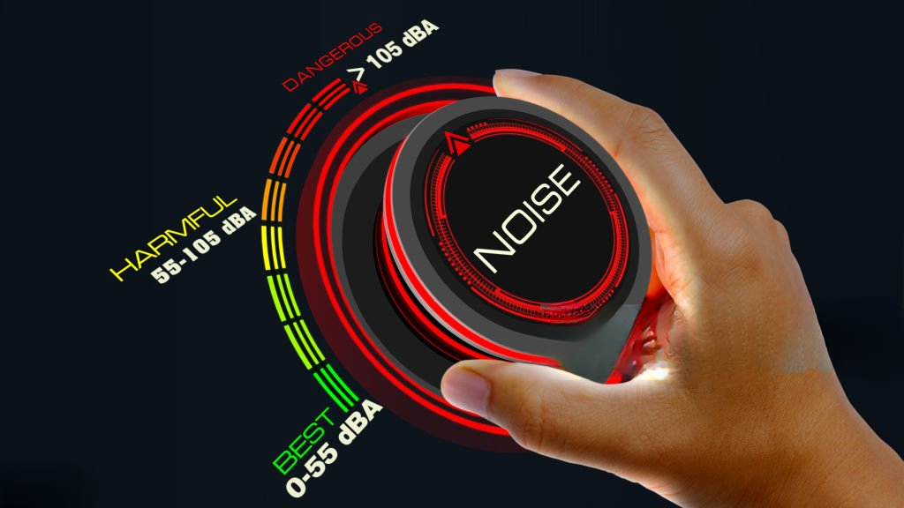

With secure and scalable audio annotation services, you can quickly turn any speech or sound file into labeled data perfect for training modern AI systems.
Annotalabs provides audio annotation services that transform raw speech and sound into structured datasets for AI, NLP, and machine learning. Moreover, as a trusted U.S.-headquartered data annotation and BPO company with a deep global delivery model, we deliver scalable, accurate, and secure solutions for industries such as healthcare, retail, customer service, and security. In addition, our services include transcription, speech labeling, audio classification, and speaker identification to train advanced speech recognition and voice-enabled applications.
With over 20 years of outsourcing expertise, Annotalabs ensures context-rich, multilingual audio annotation. As a result, businesses can build intelligent, production-ready AI systems efficiently and at scale.
We deliver tailored audio annotation solutions that cover multiple languages and use cases. As a result, AI systems learn to interpret human speech with unmatched accuracy.
Speech is converted to text using both verbatim and intelligent transcription methods. Moreover, each transcript is reviewed to maintain high linguistic accuracy.
Recordings are categorized by sentiment, quality, or conversational topics. As a result, AI models gain structured data for improved speech understanding.
Individual speakers are labeled in multi-voice recordings. Therefore, audio clarity and contextual accuracy are significantly enhanced.
Emotions such as positive, negative, or neutral are tagged within spoken content. In addition, this helps AI systems interpret tone and mood effectively.

Add contextual meaning to text to improve prediction accuracy for NLP models. As a result, AI systems better understand intent and semantics across datasets.
User intent is detected in natural conversations. Moreover, this enables the training of smarter and more responsive virtual assistants.
Specific audio events are annotated for security, compliance, or research purposes. As a result, organizations gain deeper analytical insights from voice data.
Audio is labeled accurately across multiple languages and dialects. Furthermore, linguistic experts ensure consistency in every regional context.
Annotalabs combines human expertise with advanced workflows to provide reliable audio annotation services. Therefore, we effectively support enterprise-scale AI and speech recognition initiatives.
Human-in-the-loop approach ensures precision across complex speech datasets. Moreover, each file undergoes multiple quality checks to maintain consistency and reliability.
Native linguists manage diverse languages, dialects, and accents with ease. As a result, AI models learn to recognize global speech patterns more effectively.
SOC-compliant processes are followed to protect sensitive audio data from start to finish. In addition, strict access controls and encryption guarantee full data privacy.
We deliver secure, scalable, and affordable audio annotation outsourcing services backed by decades of BPO expertise and skilled linguists worldwide. Moreover, our proven processes ensure consistent quality and reliability across every project.
With over 20 years in BPO, reliable and proven annotation services are delivered consistently. Moreover, long-standing expertise ensures quality and client satisfaction across every project.
Cost-effective solutions are designed to reduce project costs. As a result, businesses achieve accuracy and quality without overspending.
Team of 1,500+ skilled linguists manages complex, multilingual audio datasets seamlessly. In addition, domain knowledge ensures both cultural and contextual precision.
24/7 workforce accelerates delivery timelines for large-scale audio projects. Therefore, clients experience faster results with no compromise on quality.
Multi-level quality checks are performed for every dataset. Consequently, each annotation meets precise, context-aware accuracy standards.
Flexible workforce scales effortlessly to meet enterprise requirements worldwide. Furthermore, adaptation to fluctuating volumes ensures delivery speed and quality remain unaffected.
Here are answers to common questions about audio annotation and how Annotalabs supports enterprise-scale AI and speech recognition projects.
Audio annotation is the process of labeling sound or speech data with metadata such as transcription, speaker identification, or sentiment. As a result, this structured information helps machine learning models interpret voice commands, conversations, and sound events accurately. Moreover, audio annotation supports diverse applications across industries, from healthcare dictation to customer service automation.
Voice-enabled AI (like Alexa, Siri, and customer service bots) requires massive amounts of accurately transcribed and labeled audio to understand different accents, background noises, and speech patterns.
Common techniques include verbatim transcription, speaker diarization (identifying who spoke when), sentiment analysis, and sound event tagging.
Call centers (quality assurance), healthcare (medical dictation), media (captioning), and automotive (voice commands) heavily rely on audio annotation.
We provide global multilingual support, rapid turnaround times, and a rigorous QA process that ensures your speech models are trained on flawless data.